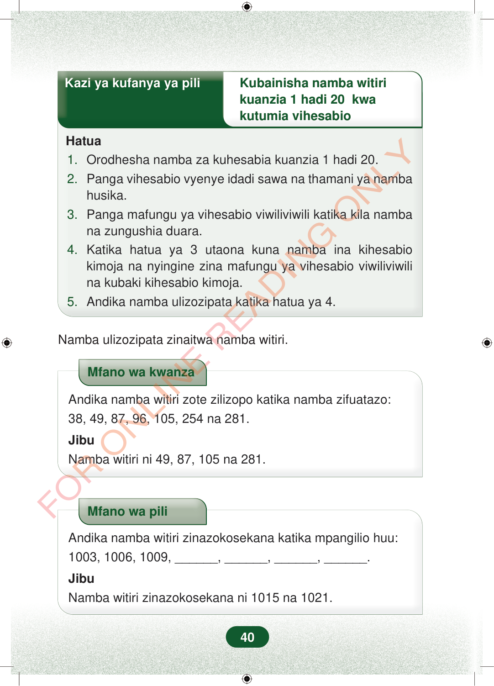

Kazi ya kufanya ya piliKubainisha namba witirikuanzia 1 hadi 20 kwakutumia vihesabioHatua1.Orodhesha namba za kuhesabia kuanzia 1 hadi 20.2.Panga vihesabio vyenye idadi sawa na thamani ya nambahusika.3.Panga mafungu ya vihesabio viwiliviwili katika kila nambana zungushia duara.4.Katika hatua ya 3 utaona kuna namba ina kihesabiokimoja na nyingine zina mafungu ya vihesabio viwiliviwilina kubaki kihesabio kimoja.5.Andika namba ulizozipata katika hatua ya 4.Namba ulizozipata zinaitwa namba witiri.Mfano wa kwanzaAndika namba witiri zote zilizopo katika namba zifuatazo:38, 49, 87, 96, 105, 254 na 281.JibuNamba witiri ni 49, 87, 105 na 281.Mfano wa piliAndika namba witiri zinazokosekana katika mpangilio huu:1003, 1006, 1009, ______, ______, ______, ______.JibuNamba witiri zinazokosekana ni 1015 na 1021.40
Kazi ya kufanya ya pili Kubainisha namba witiri
kuanzia 1 hadi 20 kwa kutumia vihesabio
Hatua
1. Orodhesha namba za kuhesabia kuanzia 1 hadi 20. 2. Panga vihesabio vyenye idadi sawa na thamani ya namba husika. 3. Panga mafungu ya vihesabio viwiliviwili katika kila namba na zungushia duara. 4. Katika hatua ya 3 utaona kuna namba ina kihesabio kimoja na nyingine zina mafungu ya vihesabio viwiliviwili na kubaki kihesabio kimoja. 5. Andika namba ulizozipata katika hatua ya 4.
Namba ulizozipata zinaitwa namba witiri.
Mfano wa kwanza
Andika namba witiri zote zilizopo katika namba zifuatazo: 38, 49, 87, 96, 105, 254 na 281.
Jibu Namba witiri ni 49, 87, 105 na 281.
Mfano wa pili
Andika namba witiri zinazokosekana katika mpangilio huu: 1003, 1006, 1009, ______, ______, ______, ______.
Jibu Namba witiri zinazokosekana ni 1015 na 1021.
40
Hatua za kubainisha namba witiri kutoka 1 hadi 20 kwa kutumia vihesabio. Mwanafunzi anaorodhesha namba, anapanga vihesabio kwa mafungu ya wawiliwawili, kisha anaandika namba inayobaki na kihesabio kimoja.Kazi ya kufanya ya piliKubainisha namba witiri kuanzia 1 hadi 20 kwa kutumia vihesabioHatuaOrodhesha namba za kuhesabia kuanzia 1 hadi 20.Panga vihesabio vyenye idadi sawa na thamani ya namba husika.Panga mafungu ya vihesabio viwiliviwili katika kila namba na zungushia duara.Katika hatua ya 3 utaona kuna namba ina kihesabio kimoja na nyingine zina mafungu ya vihesabio viwiliviwili na kubaki kihesabio kimoja.Andika namba ulizozipata katika hatua ya 4.Namba ulizozipata zinaitwa namba witiri.Mfano wa kwanza wa kutambua namba witiri katika orodha ya namba 38, 49, 87, 96, 105, 254 na 281. Jibu linaonyesha namba witiri ni 49, 87, 105 na 281.Mfano wa kwanzaAndika namba witiri zote zilizopo katika namba zifuatazo:38, 49, 87, 96, 105, 254 na 281.JibuNamba witiri ni 49, 87, 105 na 281.Mfano wa pili wa kutafuta namba witiri zinazokosekana katika mpangilio 1003, 1006, 1009 na nafasi tupu. Jibu linaonyesha namba witiri zinazokosekana ni 1015 na 1021.Mfano wa piliAndika namba witiri zinazokosekana katika mpangilio huu:1003, 1006, 1009, , , , .JibuNamba witiri zinazokosekana ni 1015 na 1021.